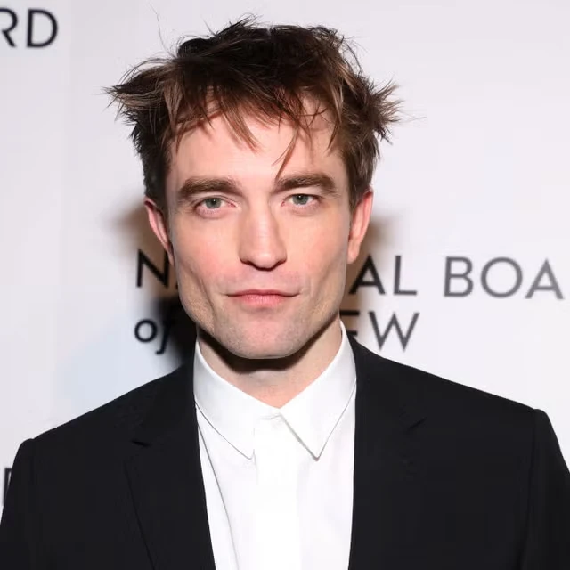
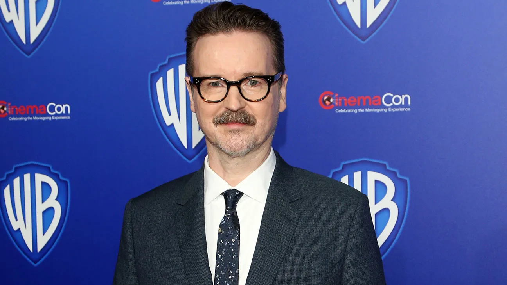
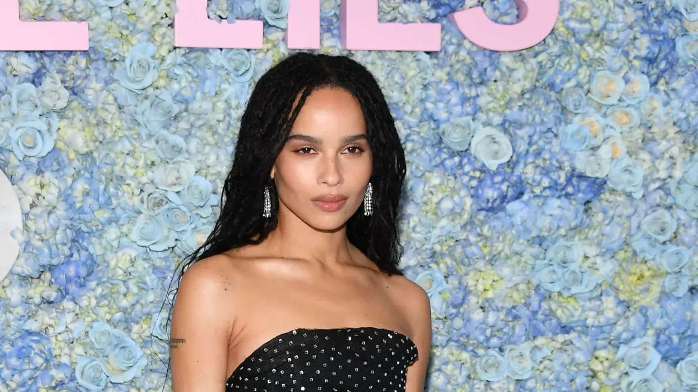
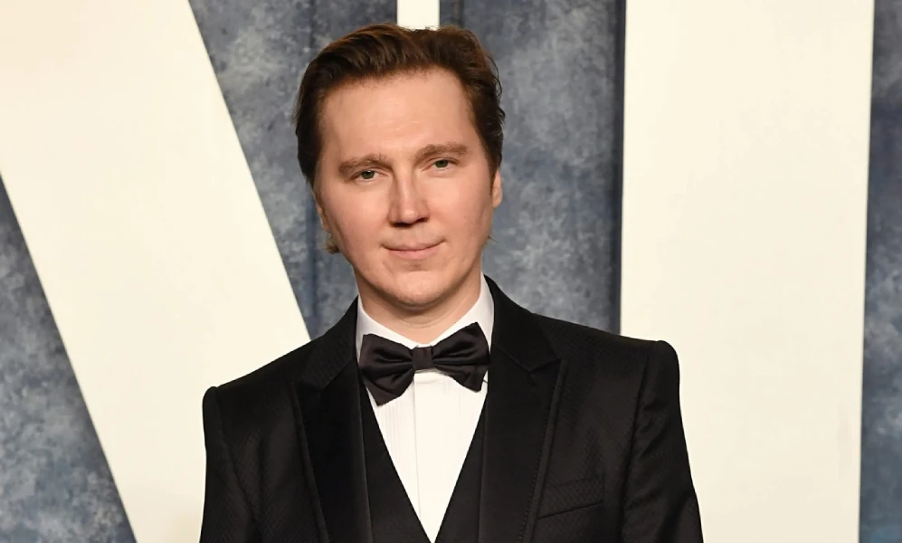
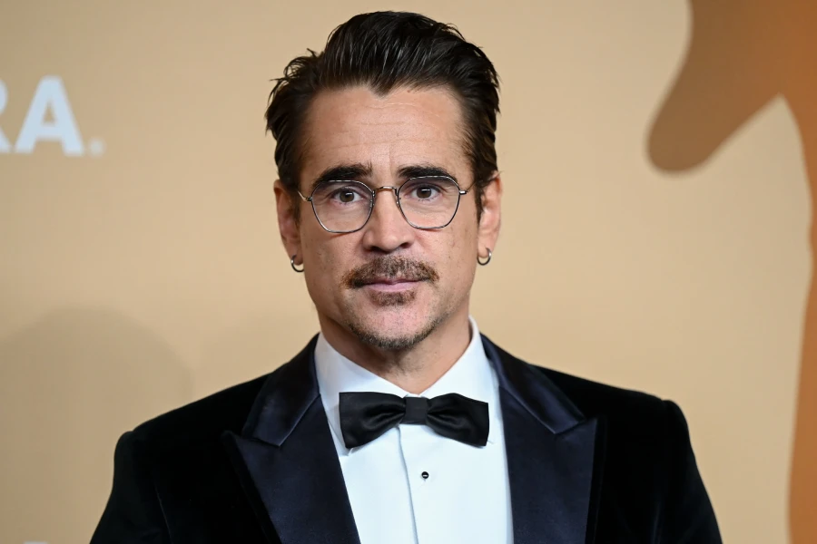
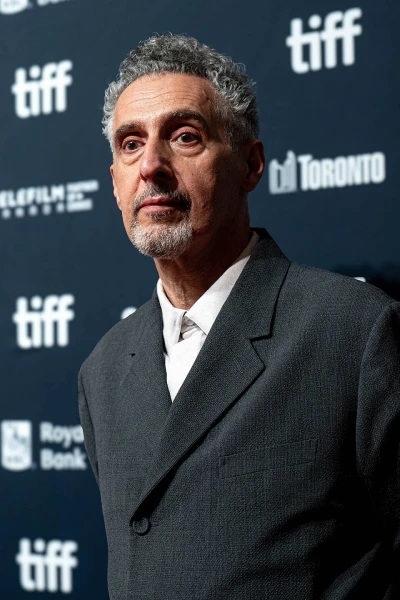
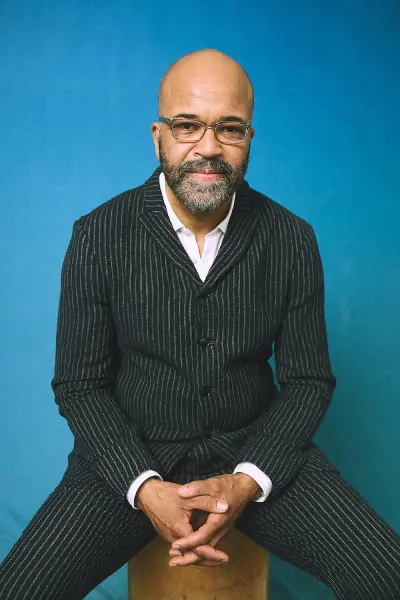

Bruce Wayne / Batman
Interpretado por Robert Pattinson
Heredero de la fortuna Wayne que lleva dos años operando en las sombras. Usa el miedo como arma — hasta que debe elegir si ser símbolo de terror o de esperanza.

La historia de un hombre que eligió el dolor de los demás como razón de existir — y tuvo que aprender la diferencia entre venganza y justicia.
Dirigida y co-escrita por Matt Reeves, The Batman sitúa la acción en el segundo año del vigilante de Gotham. No es un origen ni una saga épica: es un thriller criminal en el que Bruce Wayne actúa como detective antes que como guerrero, desentrañando una conspiración que hunde sus raíces en la historia de su propia familia.
Con una estética influenciada por Chinatown, Se7en y Taxi Driver, la película reimagina a Gotham como una ciudad enferma de corrupción sistémica. La violencia del Batman no siempre es la respuesta — y el símbolo del miedo puede convertirse, finalmente, en símbolo de esperanza.
El corazón de la película no es una batalla de puños ni una carrera de autos: es la pregunta que Bruce Wayne nunca pudo contestar. ¿Quién era realmente Thomas Wayne? ¿Y qué significa ser su hijo?

Matt Reeves

Interpretado por Robert Pattinson
Heredero de la fortuna Wayne que lleva dos años operando en las sombras. Usa el miedo como arma — hasta que debe elegir si ser símbolo de terror o de esperanza.

Interpretada por Zoë Kravitz
Ladrona con motivaciones propias: encontrar a su amiga desaparecida. Su relación con Batman es el corazón emocional del film.

Interpretado por Paul Dano
Contador forense criado en orfanatos de Gotham. Canalizó décadas de resentimiento en un plan para exponer la hipocresía de la élite.

Interpretado por Colin Farrell
Teniente de Falcone, irreconocible bajo una transformación física extraordinaria. Escala el poder a base de violencia y oportunismo.

Interpretado por John Turturro
El padrino de Gotham. Encarnación del poder corrupto que ha mantenido a la ciudad bajo su control por décadas, con vínculos que llegan hasta los Wayne.

Interpretado por Jeffrey Wright
El único policía honesto en un departamento corrompido. Aliado incómodo de Batman, unido por el mismo objetivo: sacar la verdad a la luz.
Fraser (Oscar por Dune) filmó con cámaras RED y lentes anamórficos vintage de los años 70. La paleta de color fue intencionalmente privada de luz ambiental: si algo es visible en pantalla, existe una razón dramática para que se vea. El resultado es una Gotham que parece sacada de una pesadilla en color.
Giacchino construyó el tema de Batman alrededor de una única célula musical de tres notas cargadas de angustia. El motivo del Acertijo es una distorsión mecánica de esa misma célula — el villano y el héroe están atados por la misma música rota, reforzando la idea de que son dos caras del mismo trauma.
El traje fue diseñado para ser construido por el propio Bruce Wayne con materiales militares de descarte: piezas de armadura balística recicladas, hebillas industriales, cuero sin acabado. Cada componente tiene marcas de uso real. Es la armadura de alguien que lleva dos años siendo golpeado en callejones de Gotham.
Chinlund construyó Gotham mezclando Nueva York, Chicago y Glasgow. La ciudad no es un decorado de fantasía: es una metrópolis real en estado de putrefacción. Cada exterior tiene tres capas de carteles, grafiti y basura acumulada. Wayne Manor fue diseñado deliberadamente como un lugar donde nadie ha limpiado en décadas.